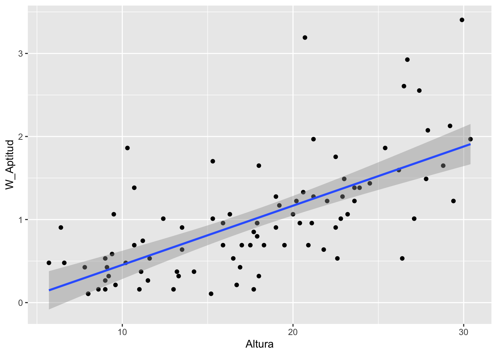
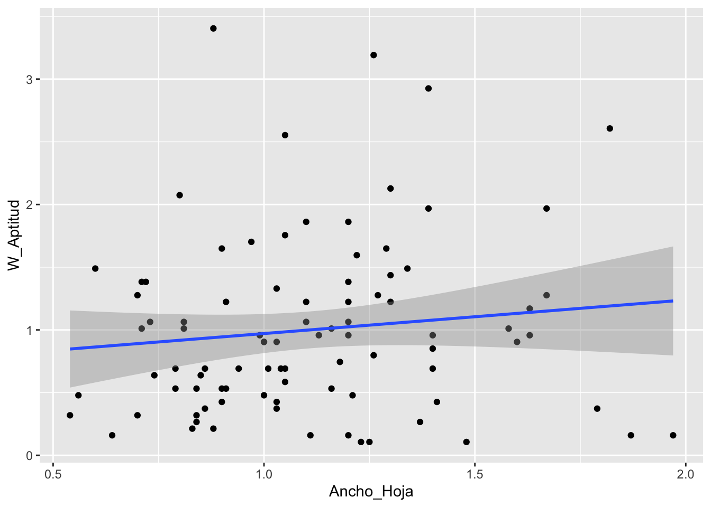
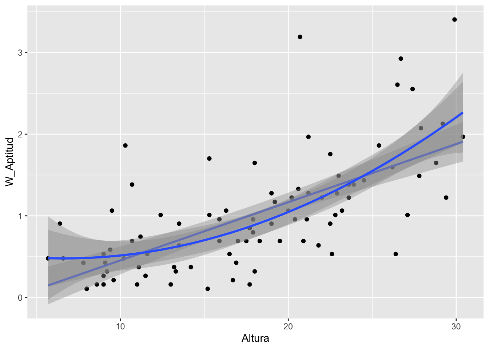

Subir los datos
library(readr)
Lab_Ecol_Data_2019_Veronia_glabra <- read_csv("Lab_Ecol_Data_2019 - Veronia_glabra.csv")## Rows: 101 Columns: 4
## ── Column specification ────────────────────────────────────────────────────────
## Delimiter: ","
## dbl (4): Num_Ind, Altura, Num_Inflorescencia, Ancho_Hoja
##
## ℹ Use `spec()` to retrieve the full column specification for this data.
## ℹ Specify the column types or set `show_col_types = FALSE` to quiet this message.head(Lab_Ecol_Data_2019_Veronia_glabra)## # A tibble: 6 × 4
## Num_Ind Altura Num_Inflorescencia Ancho_Hoja
## <dbl> <dbl> <dbl> <dbl>
## 1 1 16.5 10 1.16
## 2 2 13.3 6 0.84
## 3 3 19 17 1
## 4 4 17.7 3 1.97
## 5 5 13.2 7 1.79
## 6 6 15.2 2 1.23# calcular el promedio del Esfuerzo_Reproductivo
promedio=mean(Lab_Ecol_Data_2019_Veronia_glabra$Num_Inflorescencia, na.rm = TRUE)
promedio # en promedio cada individuo tiene x numero de Esfurzo reproductive## [1] 18.8# AHORA crear una nueva columna con W_Aptitud
Lab_Ecol_Data_2019_Veronia_glabra$W_Aptitud=Lab_Ecol_Data_2019_Veronia_glabra$Num_Inflorescencia/promedio
# vea los datos
head(Lab_Ecol_Data_2019_Veronia_glabra)## # A tibble: 6 × 5
## Num_Ind Altura Num_Inflorescencia Ancho_Hoja W_Aptitud
## <dbl> <dbl> <dbl> <dbl> <dbl>
## 1 1 16.5 10 1.16 0.532
## 2 2 13.3 6 0.84 0.319
## 3 3 19 17 1 0.904
## 4 4 17.7 3 1.97 0.160
## 5 5 13.2 7 1.79 0.372
## 6 6 15.2 2 1.23 0.106library(ggplot2)
ggplot(Lab_Ecol_Data_2019_Veronia_glabra, aes(Altura, W_Aptitud))+
geom_point() + # poner los puntos
geom_smooth(method=lm) # poner una regresion lineal## `geom_smooth()` using formula 'y ~ x'## Warning: Removed 11 rows containing non-finite values (stat_smooth).## Warning: Removed 11 rows containing missing values (geom_point).
library(ggplot2)
ggplot(Lab_Ecol_Data_2019_Veronia_glabra, aes(Ancho_Hoja, W_Aptitud))+
geom_point() + # poner los puntos
geom_smooth(method=lm) # poner una regresion lineal## `geom_smooth()` using formula 'y ~ x'## Warning: Removed 11 rows containing non-finite values (stat_smooth).## Warning: Removed 11 rows containing missing values (geom_point).
Polynomial
library(ggplot2)
ggplot(Lab_Ecol_Data_2019_Veronia_glabra, aes(Altura, W_Aptitud))+
geom_point() + # poner los puntos
geom_smooth(method=lm)+
geom_smooth(method=lm, formula=y~poly(x,2))+
geom_smooth(method=lm, formula=y~poly(x,3))# poner una regresion lineal## `geom_smooth()` using formula 'y ~ x'## Warning: Removed 11 rows containing non-finite values (stat_smooth).
## Removed 11 rows containing non-finite values (stat_smooth).
## Removed 11 rows containing non-finite values (stat_smooth).## Warning: Removed 11 rows containing missing values (geom_point).